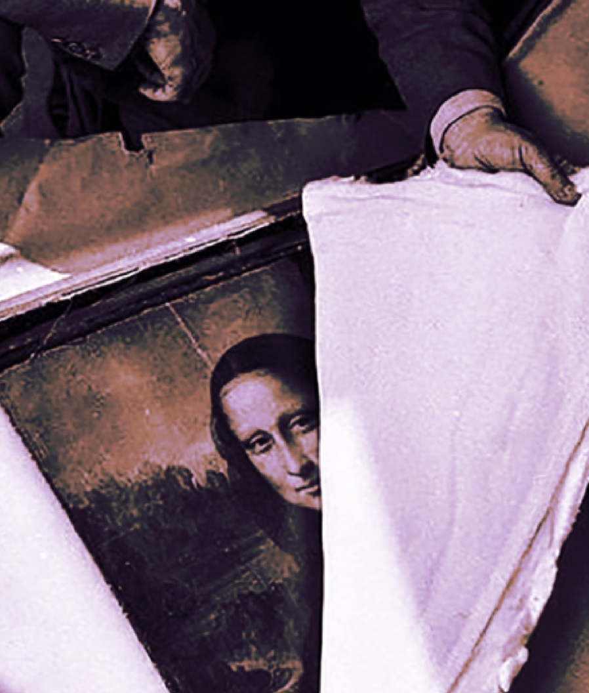

There are many conspiracy theories out there. Did we actually
go to the moon? Do airplanes put chemtrials
in the sky?
Are birds even real?!
While All of these are exceptional theories, our focus will be on conspiracies surrounding the world of art.
The Conspiracies Begin

Mona Lisa
Art has either contributed to, or been the focus of conspiracy theories for centuries. Whether the artist
themselves were inspired by forbidden topics, inserted clues about their lives, or has been given credit for
artwork that is not theirs, mysteries abound.
The Hidden Numbers of Mona Lisa
Many questions are constantly asked about the most famous painting in the world, the Mona Lisa by Leonardo da
Vinci. Who is the woman? What was da Vinci's purpose in painting her? Why was this painting carried with him for
years but never finished? These inquiries have been studied for years, and still new theories arise. The latest
of these comes from a man named Silvano Vinceti. While studying a high definition, blown up photograph of the
artwork with a magnifying glass, Vinceti claims to have found the number 72 under a bridge
in the background, the letter "S" in her right eye, and the letter "L" in the left. If true, this discovery
would then have to be interpreted. Vinceti believes that the "S" stands for the name of the woman being painted,
the "L" for Leonardo, and the 72 has some sort of religious significance.